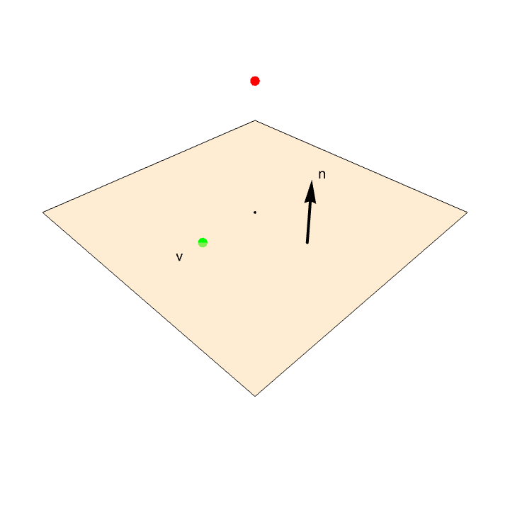
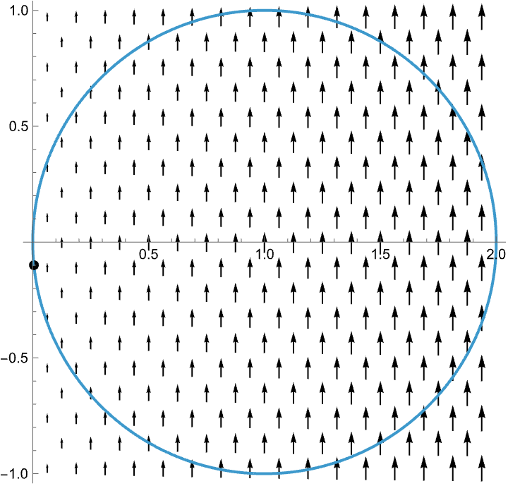
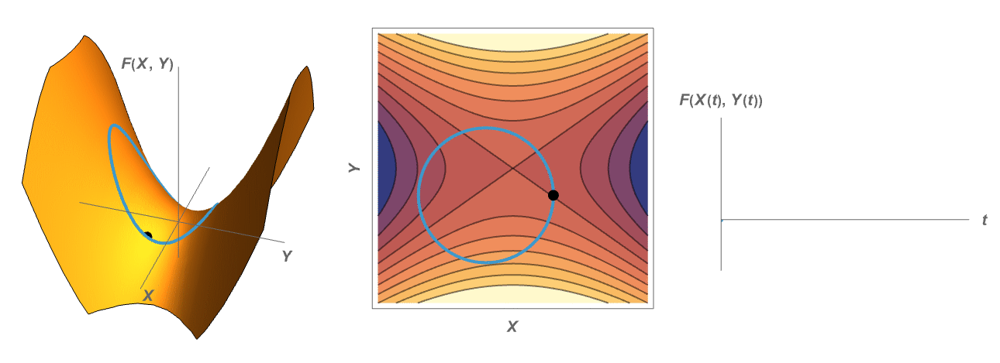
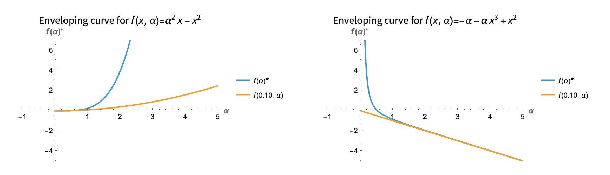
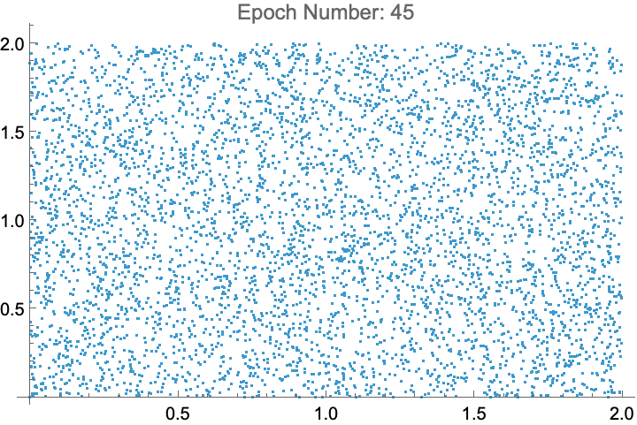
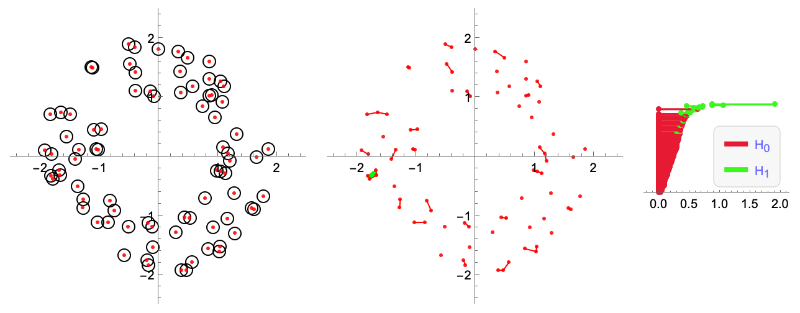
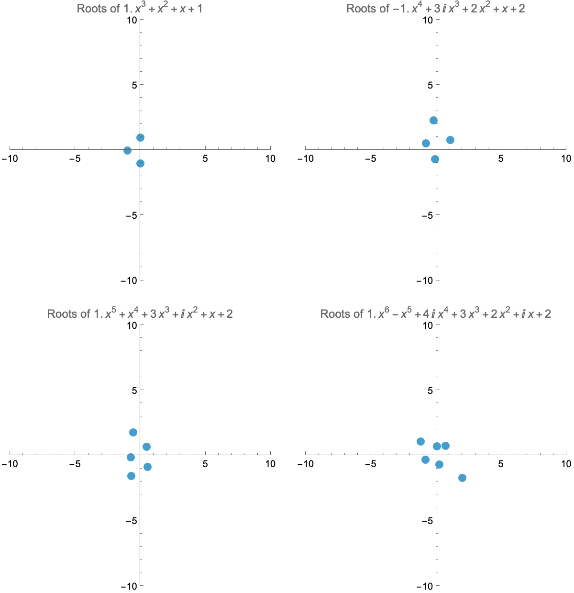

Multivariable Calculus
Distance from a point to a plane
A nice application of using scalar components is finding the distance from a point to a plane in R3. Here is a visualization of how one can take an arbitrary vector from any point on the plane to the given point, and find its scalar component in the direction of the normal vector to the plane.
Area and Green's Theorem
Although it may seem counterintuitive, line integrals can be used to measure the area bounded by a closed curve in R2. This is thanks to Green's Theorem, and the choice of a convenient vector field with curl one (for example, <0,x>). This is related to the inner works of a deviced called planimeter.

Visualizing the Method of Lagrange Multipliers
When optimizing a function over a codimension one constraint in the domain, the critical points occur at the points in which the constraint is tangent to the level sets of the given function.
The Envelope Theorem
In a parameterized contrained (or unconstrained) optimization problem, the rate of change of the optimum with respect to the parameter can be computed from the Lagrangian using the Envelope Theorem. It also relates to the fact that the family of curves of constant input act as the "envelope" of the optimum function with respect to the parameter. Here is a visualization for single variable unconstrained examples:
Here is another example, now with two variables and a constraint:

Machine Learning
The XOR Problem
A Single Layer Preceptron cannot solve the XOR problem. It can be solved using Multilayer Preceptrons, more commonly known as Neural Networks. Here is an animation of a Neural Network with one hidden layer of size 2 learning the XOR problem.
Topological Data Analysis
Persistent Homology is a common set of algorithms used in Topological Data Analysis. It can be used to detect "holes" in a point cloud. Here is a visualization of how to do so when filtrating by radius (Cech filtration). The hole detected is reflected in the longer lasting green line of the barcode (right-most plot).
Other
Roots of Polynomials
The Fundamental Theorem of Algebra tells us that polynomials of degree n have n roots (counting multiplicity). If the subleading coefficient of a polynomial is not zero, making the leading coefficient tend to zero will make one of its roots shoot to infinity. Can you guess which one?
The Mandelbrot Set
The Mandelbrot set is the set of complex numbers c for which the iterated function f(x)=z^2+c does not diverge. Complex numbers that do diverge are colored according to how fast they diverge.